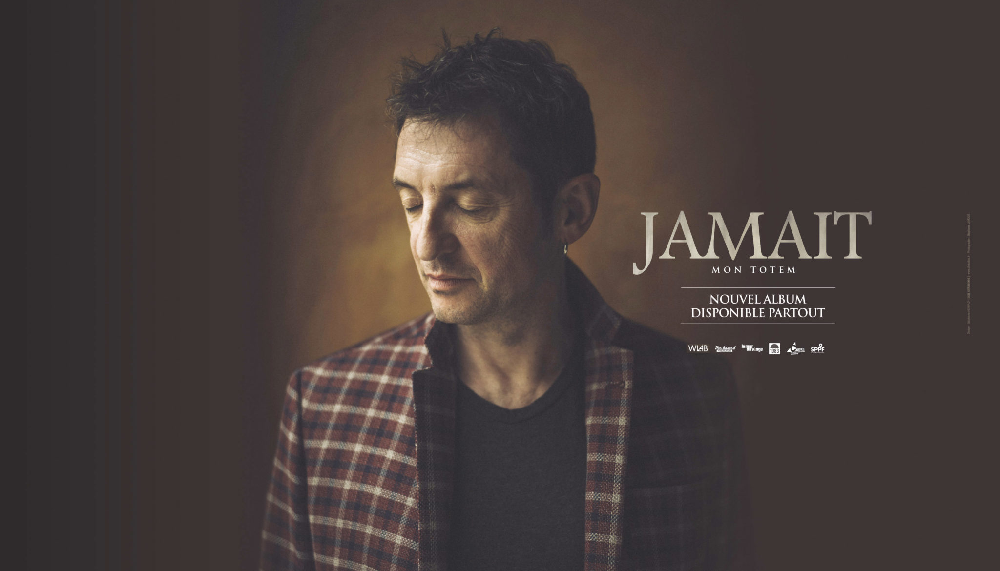
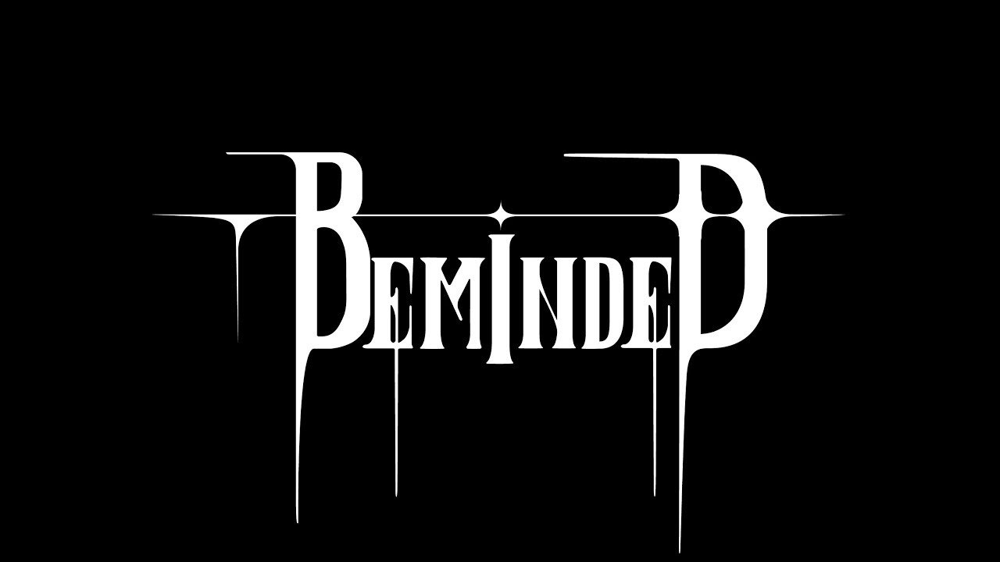

À travers sa musique, La Chica a réuni ces deux mondes en présentant
la suite...
un collage de textures et de
sons,
enraciné dans son héritage traditionnel et son afflux d'influences modernes, brisant toutes
les
normes sociales modernes.!
Elle a créé son univers autour du piano et du clavier, mêlant naturellement son inspiration
des
classiques,
son amour de Debussy et la profondeur des pages de synthés analogiques.
Sans masque, cette artiste franco-vénézuélienne transmet un brusque état d’émotion, flottant
entre
pensées abstraites et poésie introspective.
Festival Aix en Othe / Interview avec Jeanne Added
23 juillet 2019
Le vent a tourné, la fumée s’est envolée, le feu brûle.
la suite...
Sur la pochette de son deuxième album « Radiate », 2018, Jeanne Added regarde dans la même
direction que sur celle de son premier album « Be Sensational », 2015, et pourtant tout
semble s’inverser. L’apparition gris métallisée qui sortait des ténèbres fait place à une
image blanche déconcertante de sincérité et de force mêlées de tendresse. Cette invitation à
la caresse est bien plus qu’un habile clin d’œil esthétique, elle illustre à merveille
l’esprit de cet album. Si la route continue vers le même but, la même exigence musicale,
quelques fardeaux ont été déposés. Les tensions magnifiées par des sons froids qui ont fait
le succès de son premier album de combattante semblent avoir explosées au cours de ses 200
concerts partout en France pendant plus de deux ans. Du feu, il reste la flamme
incandescente de la musicienne qui brûle d’une intensité rare. Dans ce nouvel album «
Radiate », au titre évocateur s’il en est, Jeanne Added rayonne, elle chante avec une
ferveur enivrante d’émotions. Vraie, proche, détendue, elle chante à visage découvert.
Festival Aix en Othe / Interview avec Yves Jamait
23 juillet 2019

Yves Jamait apprend tout d’abord la cuisine à Dijon (Côte-d’Or) au CET du Lycée Le Castel en 1975 et,
en 1977,
la suite...
découvre la guitare mais surtout travaille dans divers domaines (il devient notamment
cuisinier, manœuvre dans le BTP, animalier en laboratoire pharmaceutique, infographiste). Il
ne forme son premier trio baptisé « De verre en vers » que tardivement et c’est en 2001 que
le groupe sort son premier album De Verre En Vers et change de nom pour s’appeler désormais
« Jamait ». Grâce au soutien de Jean-Louis Foulquier animateur sur France Inter qui
reconnaît dès ses début son talent d’écriture il est présenté à l’animateur de télévision
Patrick Sébastien qui devient son producteur. Le premier album du trio est réédité en 2005
et son deuxième album « Le Coquelicot » sort sur le label Wagram. L’accueil du public est
exceptionnel et en mars 2006, Yves Jamait fait à Dijon son premier Zénith, s’en suivra un
autre quelques mois plus tard, un Casino de Paris et son premier Olympia le 2 juin.
Festival Aix en Othe/ Interview du groupe Beminded
23 juillet 2019

BEMINDED est un groupe de Death/Sludge constitué de 4 membres originaires de l’Aube.
la suite...
Constitué d’un guitariste, Davy Nogacz, d’un bassiste, Lyonnel Helick, d’un batteur, Quentin
Mondolot et d’un chanteur, Fritz Pennerat. Nous avons décidé de former notre propre projet
en Aout 2017 : BEMINDED.
Lauréat du Tremplin PALME 2018 et Lauréat du Tremplin Festival en Othe 2019, Beminded
possède ses inspirations dans des mouvements divers. Allant vers le Sludge en passant par
des inspirations Thrash et certaines Hardcore le tout avec des voix growlées et criées, leur
musique dégage la sensibilité et la nature des membres mais également la violence de leurs
sentiments et de leurs pensées vis à vis de l’état absurde qu’est le genre humain. «
Possédant une conscience » définit clairement l’univers de Beminded.
La Fine Équipe / En direct du Festival CATALPA 2019
02 juillet 2019
La Fine Équipe est un quatuor de beatmakers, compositeurs, turntablists et musiciens français de
musique électronique
la suite...
regroupant oOgo, Chomsky, Mr. Gib et Blanka. Le groupe s’est formé au fil d’émissions de
radio qu’ils animent ensemble telles que Fine Cuts sur Radio Campus.
LA P’TITE FUMÉE / En direct du Festival CATALPA 2019
02 juillet 2019
LPF c’est d’abord une bande de potes, une équipe de choc qui a commencé à jouer dans les rues
la suite...
et les marchés d’Ariège et dont la passion pour la musique les a poussés à monter sur scène
en 2014.
En 2015 ils produisent leur premier album « Triboux » et le clip « Manuia » qui leur ouvrira
les portes des premiers festivals. Depuis le groupe parcourt les routes de France et de
Navarre et fait vibrer le public grâce à une musique tribale et festive où se mêlent
didgeridoo, percus, flûte, guitare, basse et batterie, à des samples électroniques
endiablés, mais surtout grâce à une énergie semble-t-il inépuisable…
En 2017 sort « Owl Rising » un album tout aussi puissant que leur nouveau Live qui se joue
désormais dans les meilleurs festivals.
En 2018 ils s’envolent vers l’Inde pour une première tournée complète à l’étranger et
sortent un featuring avec le DJ méxicain Mandragora : « You See Me » qui leur confère une
notoriété internationale toujours plus grande.